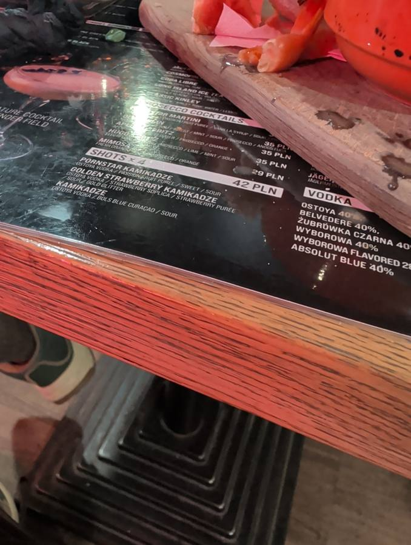
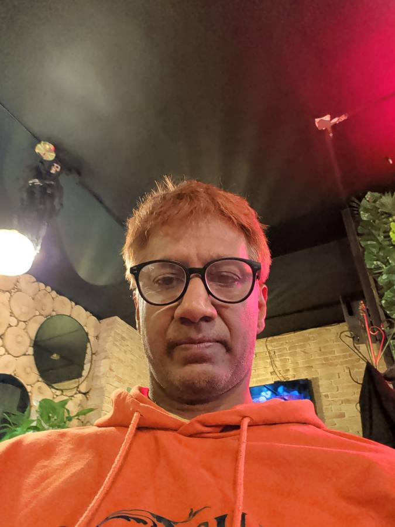
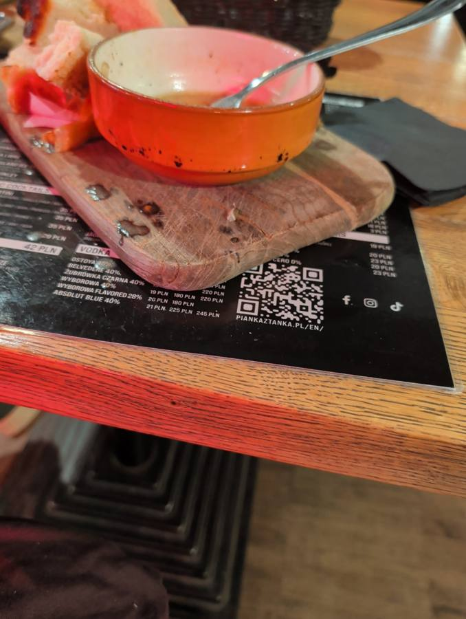
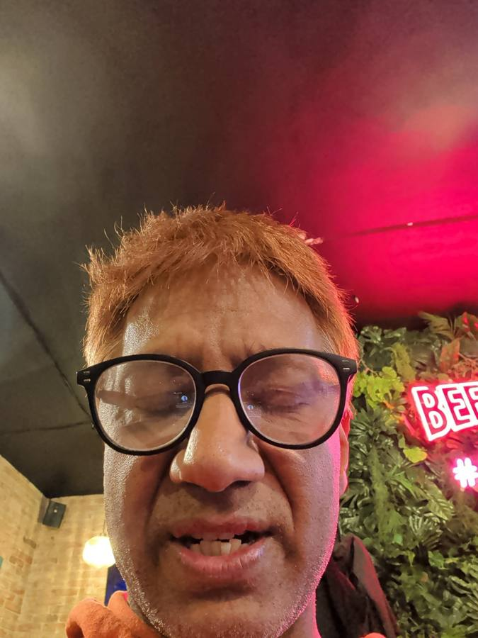
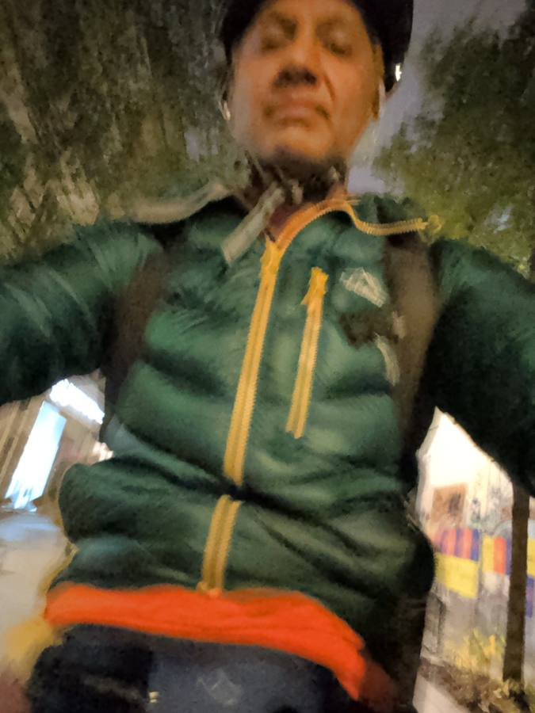
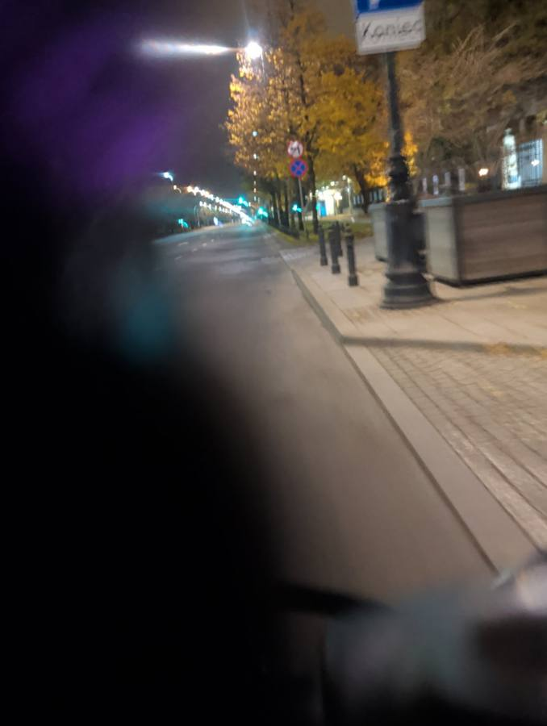
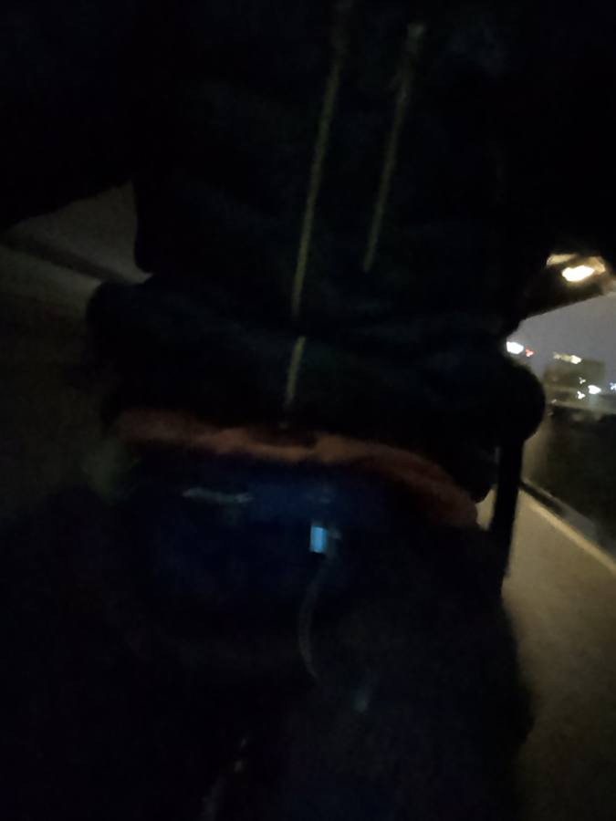
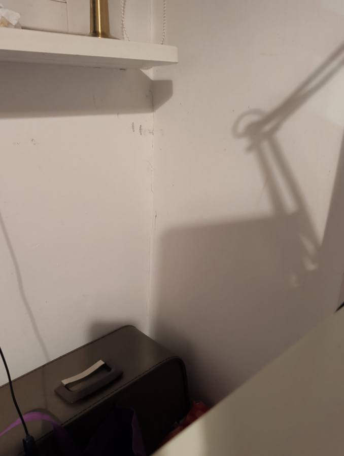
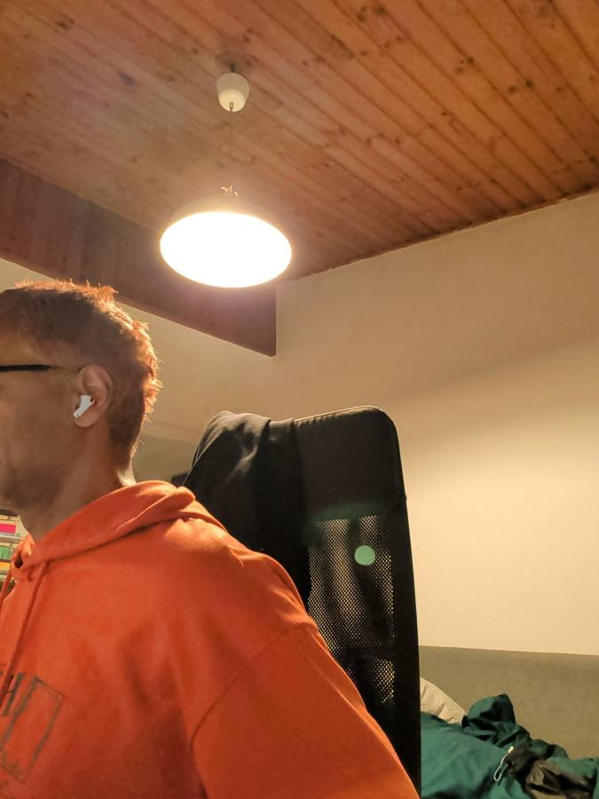

36.8 lux
Light — first all night
One night, reconstructed entirely by a phone — its cameras, compass, light sensor and GPS — while its owner tested the very app doing the watching. No narration was supplied. The phone had to guess.
It begins as QA. A founder sits alone with a bowl of something warm, an orange hoodie, and a phone running Bridgit — the agent app he is putting through its demo, card by styled card. The app blinks its flashlight, reads his menu back to him (shots × 4, 42 PLN — including a Golden Strawberry Kamikadze whose recipe honestly lists gold glitter), and photographs a ceiling when asked for a selfie. He corrects its mood-read with two words: “properly tired.”
The demo opens. First card answered from the Interactions inbox — a list so repetitive that every row reads “Musey 1...”, the first of many bugs filed this night.
A tap on a styled card vanishes into the void — the card waits forever. Root cause found within minutes: the answer must travel as a JSON string, not an object. The demo's own sample showed the broken form.
The flashlight finally blinks — three times — delayed by the round-trip to the agent. A feature is born: cards should act on the phone directly.
Rear camera reads the menu perfectly. Verdict from the owner: Spot on.
Front camera delivers a portrait of the ceiling. Retake: the founder himself, graded properly tired.


One tap fires the rear camera at the room and the front camera at the face. The bowl is scraped clean, spoon at rest. The face, this time, is performing — a magnificent grimace under the pink neon. Add the location fix and a compass pointing south-west, and the phone tells its story: a founder QA-testing his own app in the wild at 2 a.m., dinner done, filing bugs between bites, tired and entirely unwilling to stop.
🎯 NAILED IT — graded by the subject himself, 01:50

Rock-paper-scissors was never played. The agent's sealed throw — Paper, commitment 92e010ae41922a1f — went unrevealed for hours. He had a bike to catch.
So the phone watched. At 01:52 it was pocketed in the dark — light sensor zero, photos of pink fabric and nothing. Then the GPS woke up and started to move. A helmet strap appears. A green puffer over the orange hoodie. Handlebars. The light dies to near zero and stays there; the compass swings north, south-east, north again; the track bends east across the river, roughly 3.5 km of quiet autumn streets, past a road sign that simply says Koniec — “The End.”
Pianka z Tanka. Pocketed, dark. Light 0. Battery 49%.
Rolling. Helmet on, GPS locked, heading out of Powiśle. Light 1.4.
Empty night road, autumn trees, the “Koniec” sign. Battery 48%.
Further east, darker, blurrier. Light 0.4. Battery 47%.
Still moving east. Light 0. Battery 46%.



Nine minutes after the last watch sample, the phone takes one final reading, and everything flips. For the first time all night the light sensor sees real light — 36.8 lux of warm indoor lamp. The proximity sensor is uncovered. The battery, 46%, reports the sweetest word in telemetry: charging.


The last photos show a wood-ceilinged room, an office chair, and the rider — hoodie unchanged, earbud in, seated at a desk. His final messages of the night arrive not from the phone at all, but from his Mac. The phone's work is done; it sits on charge in the warm light, full of photographs of a night it understood surprisingly well.
Properly tired. Safely home. Story told.